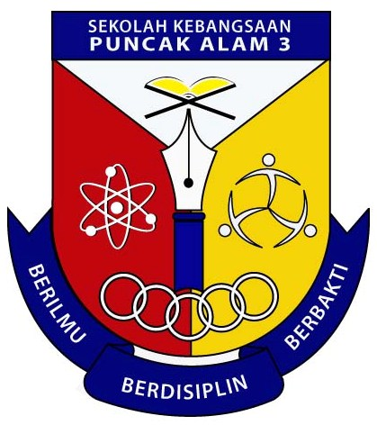
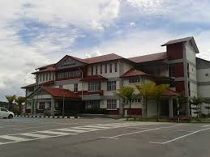
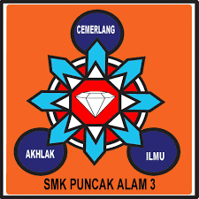
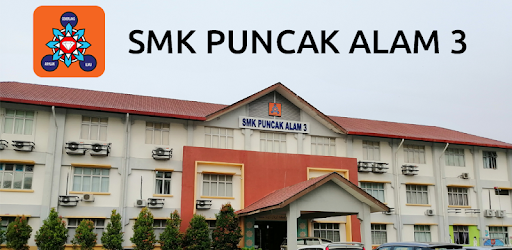

The Journey of My Education : From Elementary School to University Diploma
Beginning with the foundational years of elementary school,
education is a lifelong journey that continues through secondary school, which offers more specialized learning,
and ends with pursuing a university degree. Every stage of school is vital in forming a person's social and personal growth in addition to their academic process.
1. Elementary School
Logo

School building

Website:SKPA3
Facebook:SK Puncak Alam 3
Elementary school marks the beginning of formal education, typically catering to children aged 7 to 12.
My elementary school's name is Sekolah Kebangsaan Puncak Alam 3 (SKPA3). Morning learning sessions start at 7.30 AM - 12.00 AM.
During this time, students are introduced to basic subjects such as reading, writing, mathematics, and science.
Also, I can remember that I used to learn a third language which is Arabic. The teacher was kind, and I can tell that most of the students love to come to her class.
Facebook:SAR KAFA Integrasi Puncak Alam 3
Not just that, I am also going to religious school for the evening session, which starts after the elementary school session ends, which is called KAFA Integrasi Puncak Alam 3.
The evening session starts at 2.00 PM - 5.00 PM. I used to learn Fiqh, Tauhid, Jawi, Arabic language, reciting Iqra' (basic learning), and Khat nasakh (Islamic calligraphy).
Sometime, I used to skip the evening class because I get tired back from elementary school, but my older sister will always catch me and send me to the religious school forcefully.
I am really greatful that my older sister forced me that day which she taught me to be disciplined and not give an excuse to skip school.
2. Secondary School
Logo

School building

Website:SMK Puncak Alam 3
Youtube:SMK Puncak Alam 3
My secondary school's name is Sekolah Menengah Kebangsaan Puncak Alam 3.
Secondary school, which follows elementary education, usually spans from ages 13 to 17
but in my case, I used to spend another year in my high school, which was ages 13 to 18.
This is because at that time every country was facing the pandemic COVID-19.
I take the Sijil Pendidikan Malaysia (SPM) on my 18 ages in 2021,
which Kementerian Pendidikan Malaysia (KPM) extends our SPM to one year late because of pandemic COVID-19.
It is quite struggling to understand and learn the syllabus via online,
but I am quite proud of my hard work to face the SPM in the pandemic environment,
because at the end, I am satisfied with my SPM's result.
3. University Level (Diploma)
Logo

University building
Website:UiTM Kedah
Currently I am pursuing a diploma at the university level, where it is at University Technology MARA,
branch Sungai Petani, Kedah. I am studying about Library and Information Science, course code (IM 144).
University education offers a more focused and in-depth exploration of subjects,
preparing students for professional careers or advanced research.
The university environment also fosters critical thinking, problem-solving, and self-discipline,
as students are expected to take responsibility for their own learning.
Courses are often structured around lectures, seminars, and independent study,
providing students with the freedom to tailor their education to their specific interests and goals.
By the time students graduate with a diploma, they are equipped not only with academic knowledge
but also with the skills and confidence needed to succeed in the workforce or continue their studies at the postgraduate level.
|